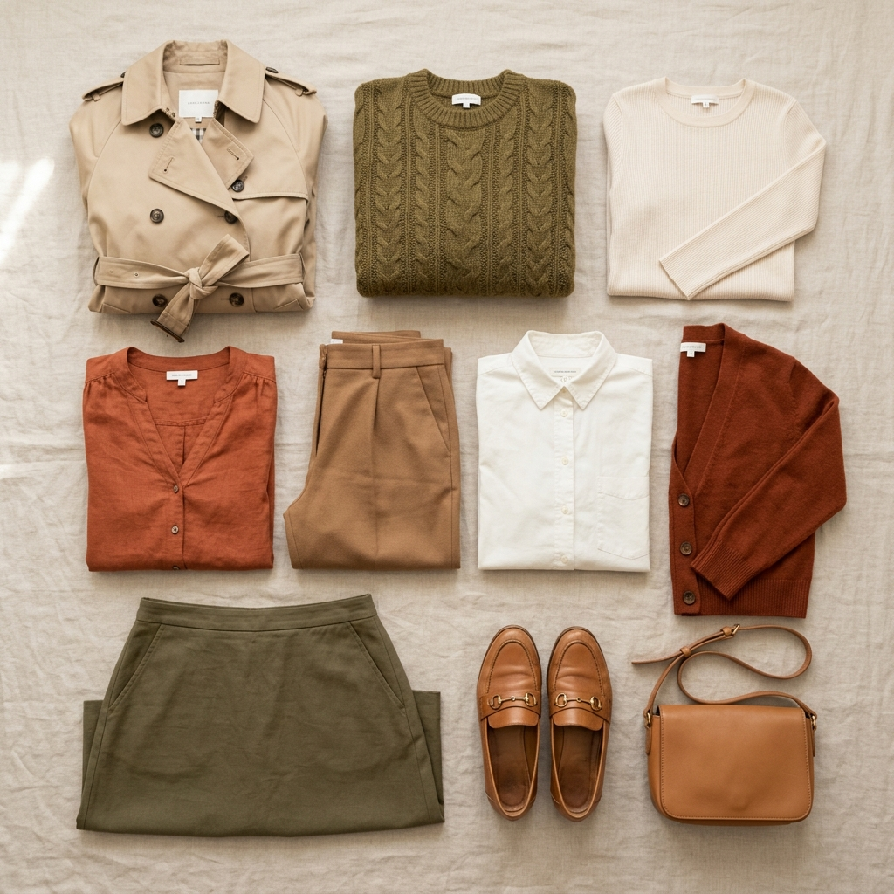

Last updated: July 15, 2026
How to Color Block Your Outfits: The Indian Fashion Guide
Quick answer: Color blocking pairs solid, contrasting colors in one outfit. For a bold look, use complementary colors (opposites on the color wheel, like a yellow kurta with green bottoms). For a softer, elegant style, use analogous colors (neighboring colors, like red with orange, or blue with purple). Keep prints minimal to let the colors stand out.

The Rules of Color Blocking
Color blocking allows you to build high-impact outfit combinations without relying on patterns or prints. It relies on the science of the color wheel.
- Complementary Pairs (Opposites) — pairing colors from opposite sides of the color wheel. This creates the highest contrast and energy. (Example: Mustard yellow kurta paired with emerald green pants).
- Analogous Pairs (Neighbors) — pairing colors that sit next to each other. This creates a harmonious, visually calming flow. (Example: Rust orange kurta paired with red bottoms).
- Same-Family Monochromatic — pairing different depths and saturations of the single same color family. (Example: Navy blue trousers paired with a light baby-blue shirt).
Color Blocking in Indian Festive Wear
Traditional Indian garments (lehengas, kurtas, sarees, and Nehru jackets) are naturally suited for color blocking.
The Two-Tone Rule
If you are new to color blocking, start with just two solid colors. A classic combination is pairing a bright top with a contrasting bottom. In ethnic wear, this is easily achieved by matching a solid kurta with contrasting salwars, churidars, or palazzos.
The Dupatta Pop
Use the dupatta to inject a second color block. A solid ivory or cream suit can be instantly elevated by adding a rich magenta or royal blue silk dupatta. This draws focus toward your face and adds elegance.
Fabric & Texture Harmony
Because color blocking focuses on solid colors rather than patterns, the texture of the fabric matters. Silk, raw silk, satin, and linen are excellent choices because they catch light and show color intensity beautifully.
FAQ
Can I color block with neutral colors?
Yes. You can match a neutral anchor (like grey, camel, or navy) with a vibrant pop of color (like coral, mustard, or teal) for a sophisticated, professional wardrobe look.
What is the best color-block combo for Haldi?
Yellow and green is a classic and vibrant color-blocked combination for Haldi or Mehendi. Matching a mustard yellow kurta with deep green bottoms creates a stunning, festive contrast.
Does color blocking work for men's shirts?
Yes, men can color block by pairing solid shirts with contrasting trousers (e.g., matching a dusty pink linen shirt with olive green chinos or khaki trousers) or layering a solid Nehru jacket over a contrasting kurta.
Not sure which color block combo suits you? [Let Colourity's AI scan tell you in under a minute →](https://colourity.com)